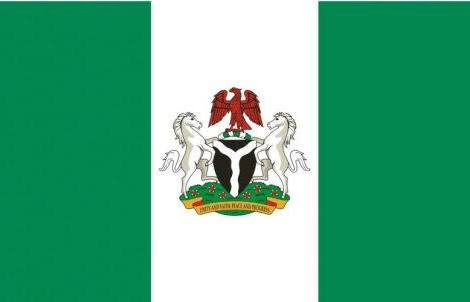

Hello, I'm Doris Uchechukwu Anakwuba
About Me
My name is Doris, and I am from Nigeria. I'm a passionate learner currently studying web development through BYU-Pathway Worldwide. I enjoy problem-solving, building user-friendly web applications, and continuously learning new technologies. Outside of tech, I love music, reading, and spending time with family.

Lagos, Nigeria

Official Flag of Nigeria
Nigeria is a lively and beautiful country in West Africa. It's full of culture, music, and delicious food. People here are known for their kindness, creativity, and strong spirit.